三伪节点部署
1 配置文件系统管理相关
[hadoop@server1 ~]$ cd hadoop
[hadoop@server1 hadoop]# vim etc/hadoop/core-site.xml

2 配置文件保存的份数
[hadoop@server1 hadoop]# vim etc/hadoop/hdfs-site.xml

3 配置hadoop密码并设置ssh免密认证
[root@server1 ~]# passwd hadoop
Changing password for user hadoop.
New password:
BAD PASSWORD: The password is shorter than 8 characters
Retype new password:
passwd: all authentication tokens updated successfully.
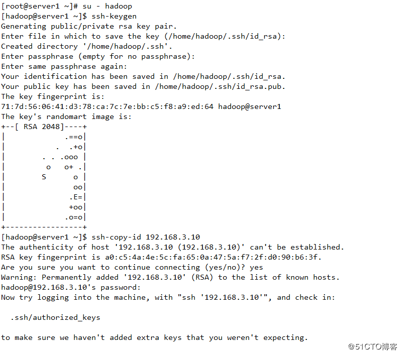
4 配置datanode节点
[hadoop@server1 ~]$ cat etc/hadoop/slaves
192.168.3.10
5 namenode节点格式化
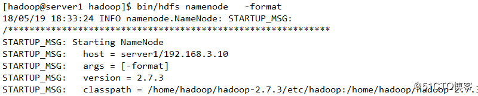
返回值为0，表示格式化成功

6 启动服务并查看进程状态
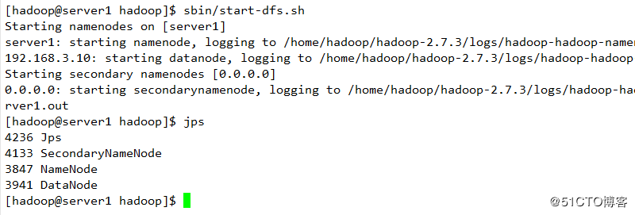
测试显示结果

7 测试
创建目录上传
查看
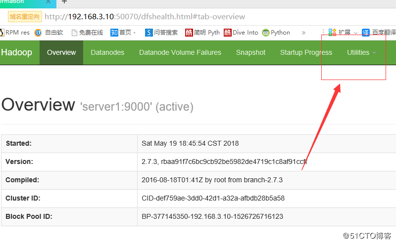

上传文件至服务端

查看
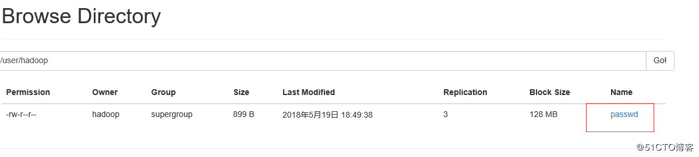
使用命令查看结果
删除并查看其显示结果
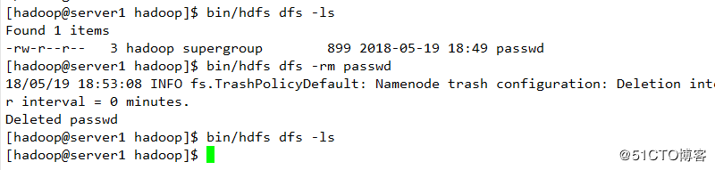
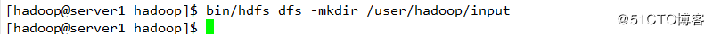


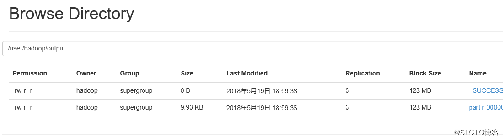
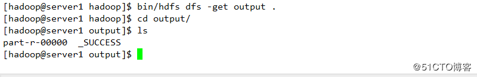
8 高级配置：mapred配置
[hadoop@server1 ~]$ cd etc/hadoop/
[hadoop@server1 hadoop]$ cp mapred-site.xml.template mapred-site.xml
[hadoop@server1 ~]$ vim mapred-site.xml

[hadoop@server1 ~]$ vim etc/hadoop/yarn-site.xml

9 启动服务并查看
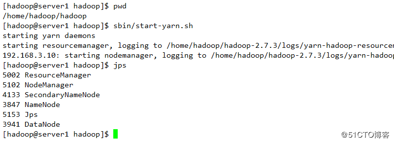
10 查看是否成功
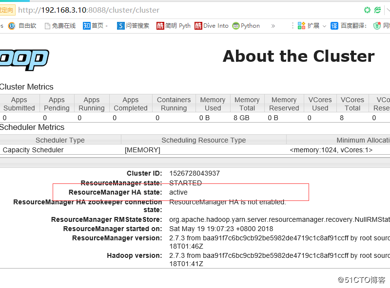